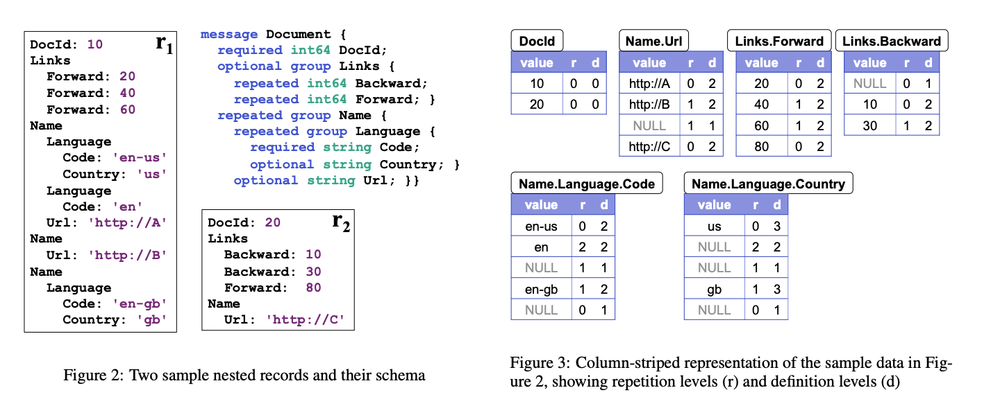
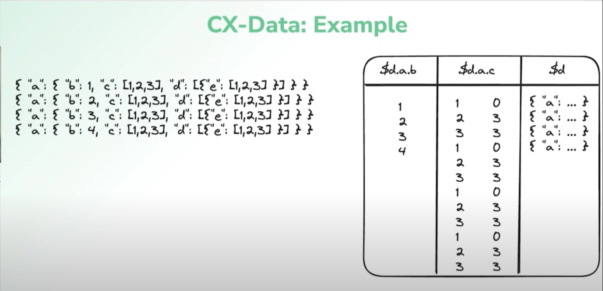

Dan Harris is a Principal Software Engineer at Coralogix (an observability platform) where he works on the remote query system.
They store customer data is stored in a data lake and analytics are provided on top of that.
Observability data is semi-structured (eg. JSON) and varies over time a lot (since new attributes keep getting added or removed to logs in a codebase).
The way to build a modern high scale OLAP system is with columnar data & store it using formats like Parquet. But columnar data doesn’t mesh very well with complex nested data structures.
How do you map heterogeneous semi-structured data to a columnar format?
- Difficult balance b/w ingestion throughput, write amplification and query efficiency.
- Prior art: Record shredding (2010)1, Sinew (2014), JSON Tiles (2021).
Record Shredding aka Dremel Encoding
- Flatten record and store the leaf value at the same path in columns.
- Use additional metadata to reconstruct the nested structure on read:
- Repetition levels: For repeated value (eg. an array of arrays), identifies at which level the value is repeated.
- Definition levels: If you’ve a null value in a column then it tells you which level is the column actually null at (since if you’ve a null value at higher level in the tree then all sub-values are implicitly null).

This works well if you’ve a nested relatively static structure with a fixed schema. But they had some issues:
- In very wide tables, construction of nested values during scan can be very expensive
- To produce the full record, you need to read all columns.
- Slows down reading but also data compaction during ingestion.
- Requires tracking globally merged schema.
- Very difficult when ingesting many GB/s or very heterogeneous data.
- Records get coerced into a globally merged schema.
- Adds a lot of random noise from spares values which get “imputed” into all records when read. (even an originally small document would end up with a lot of extra fields with null values when read)
- Dealing with type conflicts requires another layer of complexity.
- The Arrow format supports union types so you can resolve type conflicts by lifting types into union but it adds a lot of complexity.
Sinew
The key insight of the Sinew paper is that the logical structure of the data that doesn’t need to match the physical representation.
- Logical schema is the merged schema of all records in the table.
- Physical schema is partitioned into physical and virtual columns.
- Physical columns are materialized and stored in their own column (or row in a row-oriented DB).
- Virtual columns are stored together in an efficient binary format.
The schema analyzer decides what columns to materialize into physical columns as data evolves.
During query time, you can track which columns are physical or virtual. Anything that’s not a physical column and materialized can be materialized on the fly
The schema analyzer proposed in the paper was in the context of a single node DB. Very difficult to implement it for hundreds of nodes. So, they decided to not go ahead with this.
JSON Tiles
Extends the original ideas behind Sinew. It provided a new method for clustering records to maximize efficiency of materialized columns.
- During data ingestion, group records into fixed size chunks (“tiles”).
- Use FP-Growth algorithm to identify “frequent item-sets” (eg. common fields in records).
- Exchange records b/w tiles to group more similar records together in the same tile.
- Non-materialized columns are stored in a binary json format.
This can be just done locally on a node and you don’t need to do this in a distributed manner.
FP-Growth isn’t efficient and becomes expensive to run at scale.
Synthesis : CX-Data
They created their own format: CX-Data.
- Uses Parquet as physical file format.
- Build on insights from the Sinew and JSON Tiles paper.
- Does partial materialization of leaf values into separate Parquet columns.
- Store the original raw record in an efficient binary format.
- Dynamically materialize virtual columns during query execution if required.
- Avoid materializing complex nested structured, only scalar values and arrays of scalars.
- Avoid costly coordination during ingestion & query execution.
- Decisions about materialization are local to an ingestion task.
- They decide what to materialize by taking the top N least sparse columns in the chunk of data.
- All schema information during query planning is inferred from the query itself with no external catalog.
- Decisions about materialization are local to an ingestion task.

Since parsing JSON strings on the fly while scanning data for reads is really slow, the raw record needs to be stored in an efficient format. There were a lot of existing binary JSON formats like: Postgres JSONB, BSON (MongoDB), SQLite JSONB, Amazon ION, MessagePack etc.
But, they made their own binary JSON format based on Postgres JSONB.
Postgres JSONB
JsonbValue
+---------------------------------------------------------------+
| [JEntry] [JEntry] [JEntry] | [Value] [ ] [ ] ... [ ] |
+---------------------------------------------------------------+
JEntry (32 bits)
+---------------------------------------------------------------+
| 0 | 1 1 0 | 1 0 1 0 0 ... |
+---------------------------------------------------------------+
| | |
| | +-- length/offset of value (scalar) OR children count (container)
| |
| +------------- type (object, array, string etc.) |
+----------------- length/offset
A JsonbValue has fixed length JEntries followed by variable length values.
For simple scalar values, either the length or offset is stored in the remaining 28 bits.
- At like every 32nd JEntries, they store an offset and the rest store the length so you’ve to never traverse more than 32 JEntries to find the offset into the value buffer for a JEntry.
Containers like array or an object store the no. of children i.e. items in the array OR key-value pairs in the object.
JsonA / JSON Arrow : Binary JSON format for the columnar world
Issues with existing formats
- Designed for row/document stores.
- Doesn’t cleanly separate structure from data.
- You store everything together so you can’t reduce IO. You’ve to read the whole column as a column chunk and you can then sort and traverse though there & it’s fast to traverse through and find the value but in a data lake architecture you want to eliminate IO as much as possible.
Small tweaks to adapt the Postgres JSONB format to column stores
- Take the JEntries and variable length values and separate them into different columns.
- Split the variable length columns into 2 separate buffers. One for keys and another for values.
- The keys are repeated a lot so you can use dictionary encoding here. Also, if you want to find a particular path in an object, you just need to read the keys without reading the value buffer (where the bulk of the data lives).
- You can also prune I/O by converting a query like
path = 1topath != NULL AND path = 1for predicate filtering.
Separating the structure from value data:
- Made traversing structure (key lookup) cache-friendly
- Minimized IO when queries can be resolved only based on structure
Other benefits of JsonA
- Faster to parse from JSON string
- Build the structure directly from parse w/o intermediate representation
- In their benchmarks, ~40% faster to parse to JsonA than to serde_json::Value2
- There’s no intermediate state (like a parse tree) in parsing JsonA that you’ve to build unlike JSON. You build the structure as you process the input tokens.
- Fast value extraction
- Can extract multiple values from single traversal
- IsNull, IsNotNull, IsTrue, IsFalse checks can be done purely with nodes and keys
- For predicate pushdown, IO can be eliminated for values
- String values are stored already unescaped
- Eliminates parsing overhead for full-text search
Q/A
- If the decision for what column to materialize is done on a per-chunk basis, does that mean during query execution each chunk has very different set of columns?
- It makes things like planning partitioning (for distributed query execution) difficult since you don’t know where data is materialized and where it’s not materialized. One partition may take significantly longer than other since a column might be virtual for those chunks.
- Do you have any background process that looks through all the chunks and reorganizes them?
- No. It’s not currently feasible due to the amount of data. Working on smarter ways to do materialization.
- What’s the target size for ingesting Parquet files?
- ~ 50-300 MBs.
- This can get compacted into larger files.
- In practice, how varied are schemas are w/ customer workloads?
- Extremely varied.
- We dump data into big silos. All logs (even from different systems) go into a single table.
- Every once in a while, you’ve someone who tries to make UUID a key in the object. We’ve ways of preventing that from blowing anything up but it’s a constant problem.
Footnotes
-
Introduced in Dremel: Interactive Analysis of Web-Scale Datasets. Also see A Look at Dremel. Parquet (https://blog.x.com/engineering/en_us/a/2013/dremel-made-simple-with-parquet) also uses Dremel encoding. ↩